Minecraftneutre
Abeille
Bee
Abeille reste généralement calme tant que le joueur ne le provoque pas ou ne menace pas ses petits.
ApparitionNids près des fleurs
Butin principalAucun; miel via ruche
Édition premium
Le registre réunit la faune vanilla et les véritables créatures des mods. 143 créatures modées disposent désormais d’un portrait local : 134 captures validées, 7 reconstructions et 2 captures récupérées. Aucune de ces images ne dépend d’un wiki externe.
Attention aux variantes
Champions peut transformer presque n’importe quel ennemi en élite à affixes. The Hordes et les lunes spéciales changent aussi la pression des rencontres.
mods. Certaines règles d’apparition sont calculées par du code Java; elles sont alors indiquées à l’échelle du biome, de la structure ou de l’événement plutôt qu’avec une coordonnée précise.Bee
Abeille reste généralement calme tant que le joueur ne le provoque pas ou ne menace pas ses petits.
Allay
Allay est une créature généralement inoffensive de Minecraft. Elle fait partie de la faune normale rencontrée pendant l’exploration.
Spider
Araignée reste généralement calme tant que le joueur ne le provoque pas ou ne menace pas ses petits.
Cave Spider
Araignée venimeuse attaque les joueurs et devient plus dangereux avec les systèmes de difficulté, de Champions et les événements du modpack.
Strider
Arpenteur est une créature généralement inoffensive de Minecraft. Elle fait partie de la faune normale rencontrée pendant l’exploration.
Axolotl
Axolotl est une créature généralement inoffensive de Minecraft. Elle fait partie de la faune normale rencontrée pendant l’exploration.
Blaze
Blaze attaque les joueurs et devient plus dangereux avec les systèmes de difficulté, de Champions et les événements du modpack.
Camel
Chameau est une créature généralement inoffensive de Minecraft. Elle fait partie de la faune normale rencontrée pendant l’exploration.
Mooshroom
Champimeuh est une créature généralement inoffensive de Minecraft. Elle fait partie de la faune normale rencontrée pendant l’exploration.
Cat
Chat est une créature généralement inoffensive de Minecraft. Elle fait partie de la faune normale rencontrée pendant l’exploration.
Bat
Chauve-souris est une créature généralement inoffensive de Minecraft. Elle fait partie de la faune normale rencontrée pendant l’exploration.
Horse
Cheval est une créature généralement inoffensive de Minecraft. Elle fait partie de la faune normale rencontrée pendant l’exploration.
Skeleton Horse
Cheval-squelette est une créature généralement inoffensive de Minecraft. Elle fait partie de la faune normale rencontrée pendant l’exploration.
Goat
Chèvre reste généralement calme tant que le joueur ne le provoque pas ou ne menace pas ses petits.
Pig
Cochon est une créature généralement inoffensive de Minecraft. Elle fait partie de la faune normale rencontrée pendant l’exploration.
Creeper
Creeper attaque les joueurs et devient plus dangereux avec les systèmes de difficulté, de Champions et les événements du modpack.
Magma Cube
Cube de magma attaque les joueurs et devient plus dangereux avec les systèmes de difficulté, de Champions et les événements du modpack.
Dolphin
Dauphin reste généralement calme tant que le joueur ne le provoque pas ou ne menace pas ses petits.
Ender Dragon
Ender Dragon est une rencontre majeure de Minecraft. Dans ASCENSION, Epic Fight et les systèmes de progression peuvent rendre ce combat plus exigeant.
Enderman
Enderman reste généralement calme tant que le joueur ne le provoque pas ou ne menace pas ses petits.
Endermite
Endermite attaque les joueurs et devient plus dangereux avec les systèmes de difficulté, de Champions et les événements du modpack.
Guardian
Gardien attaque les joueurs et devient plus dangereux avec les systèmes de difficulté, de Champions et les événements du modpack.
Ghast
Ghast attaque les joueurs et devient plus dangereux avec les systèmes de difficulté, de Champions et les événements du modpack.
Iron Golem
Golem de fer reste généralement calme tant que le joueur ne le provoque pas ou ne menace pas ses petits.
Snow Golem
Golem de neige est une créature généralement inoffensive de Minecraft. Elle fait partie de la faune normale rencontrée pendant l’exploration.
Elder Guardian
Grand gardien est une rencontre majeure de Minecraft. Dans ASCENSION, Epic Fight et les systèmes de progression peuvent rendre ce combat plus exigeant.
Frog
Grenouille est une créature généralement inoffensive de Minecraft. Elle fait partie de la faune normale rencontrée pendant l’exploration.
Hoglin
Hoglin attaque les joueurs et devient plus dangereux avec les systèmes de difficulté, de Champions et les événements du modpack.
Husk
Husk attaque les joueurs et devient plus dangereux avec les systèmes de difficulté, de Champions et les événements du modpack.
Llama
Lama reste généralement calme tant que le joueur ne le provoque pas ou ne menace pas ses petits.
Trader Llama
Lama de marchand reste généralement calme tant que le joueur ne le provoque pas ou ne menace pas ses petits.
Rabbit
Lapin est une créature généralement inoffensive de Minecraft. Elle fait partie de la faune normale rencontrée pendant l’exploration.
Wolf
Loup reste généralement calme tant que le joueur ne le provoque pas ou ne menace pas ses petits.
Wandering Trader
Marchand ambulant est une créature généralement inoffensive de Minecraft. Elle fait partie de la faune normale rencontrée pendant l’exploration.
Cod
Morue est une créature généralement inoffensive de Minecraft. Elle fait partie de la faune normale rencontrée pendant l’exploration.
Sheep
Mouton est une créature généralement inoffensive de Minecraft. Elle fait partie de la faune normale rencontrée pendant l’exploration.
Mule
Mule est une créature généralement inoffensive de Minecraft. Elle fait partie de la faune normale rencontrée pendant l’exploration.
Drowned
Noyé attaque les joueurs et devient plus dangereux avec les systèmes de difficulté, de Champions et les événements du modpack.
Ocelot
Ocelot est une créature généralement inoffensive de Minecraft. Elle fait partie de la faune normale rencontrée pendant l’exploration.
Polar Bear
Ours polaire reste généralement calme tant que le joueur ne le provoque pas ou ne menace pas ses petits.
Panda
Panda reste généralement calme tant que le joueur ne le provoque pas ou ne menace pas ses petits.
Parrot
Perroquet est une créature généralement inoffensive de Minecraft. Elle fait partie de la faune normale rencontrée pendant l’exploration.
Phantom
Phantom attaque les joueurs et devient plus dangereux avec les systèmes de difficulté, de Champions et les événements du modpack.
Piglin
Piglin reste généralement calme tant que le joueur ne le provoque pas ou ne menace pas ses petits.
Piglin Brute
Piglin barbare attaque les joueurs et devient plus dangereux avec les systèmes de difficulté, de Champions et les événements du modpack.
Zombified Piglin
Piglin zombifié reste généralement calme tant que le joueur ne le provoque pas ou ne menace pas ses petits.
Pillager
Pillard attaque les joueurs et devient plus dangereux avec les systèmes de difficulté, de Champions et les événements du modpack.
Silverfish
Poisson d’argent attaque les joueurs et devient plus dangereux avec les systèmes de difficulté, de Champions et les événements du modpack.
Tropical Fish
Poisson tropical est une créature généralement inoffensive de Minecraft. Elle fait partie de la faune normale rencontrée pendant l’exploration.
Pufferfish
Poisson-globe est une créature généralement inoffensive de Minecraft. Elle fait partie de la faune normale rencontrée pendant l’exploration.
Chicken
Poule est une créature généralement inoffensive de Minecraft. Elle fait partie de la faune normale rencontrée pendant l’exploration.
Squid
Poulpe est une créature généralement inoffensive de Minecraft. Elle fait partie de la faune normale rencontrée pendant l’exploration.
Glow Squid
Poulpe lumineux est une créature généralement inoffensive de Minecraft. Elle fait partie de la faune normale rencontrée pendant l’exploration.
Ravager
Ravageur attaque les joueurs et devient plus dangereux avec les systèmes de difficulté, de Champions et les événements du modpack.
Fox
Renard est une créature généralement inoffensive de Minecraft. Elle fait partie de la faune normale rencontrée pendant l’exploration.
Sniffer
Renifleur est une créature généralement inoffensive de Minecraft. Elle fait partie de la faune normale rencontrée pendant l’exploration.
Salmon
Saumon est une créature généralement inoffensive de Minecraft. Elle fait partie de la faune normale rencontrée pendant l’exploration.
Shulker
Shulker attaque les joueurs et devient plus dangereux avec les systèmes de difficulté, de Champions et les événements du modpack.
Slime
Slime attaque les joueurs et devient plus dangereux avec les systèmes de difficulté, de Champions et les événements du modpack.
Witch
Sorcière attaque les joueurs et devient plus dangereux avec les systèmes de difficulté, de Champions et les événements du modpack.
Skeleton
Squelette attaque les joueurs et devient plus dangereux avec les systèmes de difficulté, de Champions et les événements du modpack.
Turtle
Tortue est une créature généralement inoffensive de Minecraft. Elle fait partie de la faune normale rencontrée pendant l’exploration.
Tadpole
Têtard est une créature généralement inoffensive de Minecraft. Elle fait partie de la faune normale rencontrée pendant l’exploration.
Cow
Vache est une créature généralement inoffensive de Minecraft. Elle fait partie de la faune normale rencontrée pendant l’exploration.
Stray
Vagabond attaque les joueurs et devient plus dangereux avec les systèmes de difficulté, de Champions et les événements du modpack.
Vex
Vex attaque les joueurs et devient plus dangereux avec les systèmes de difficulté, de Champions et les événements du modpack.
Villager
Villageois est une créature généralement inoffensive de Minecraft. Elle fait partie de la faune normale rencontrée pendant l’exploration.
Zombie Villager
Villageois zombie attaque les joueurs et devient plus dangereux avec les systèmes de difficulté, de Champions et les événements du modpack.
Vindicator
Vindicateur attaque les joueurs et devient plus dangereux avec les systèmes de difficulté, de Champions et les événements du modpack.
Warden
Warden est une rencontre majeure de Minecraft. Dans ASCENSION, Epic Fight et les systèmes de progression peuvent rendre ce combat plus exigeant.
Wither
Wither est une rencontre majeure de Minecraft. Dans ASCENSION, Epic Fight et les systèmes de progression peuvent rendre ce combat plus exigeant.
Wither Skeleton
Wither squelette attaque les joueurs et devient plus dangereux avec les systèmes de difficulté, de Champions et les événements du modpack.
Zoglin
Zoglin attaque les joueurs et devient plus dangereux avec les systèmes de difficulté, de Champions et les événements du modpack.
Zombie
Zombie attaque les joueurs et devient plus dangereux avec les systèmes de difficulté, de Champions et les événements du modpack.
Donkey
Âne est une créature généralement inoffensive de Minecraft. Elle fait partie de la faune normale rencontrée pendant l’exploration.
Evoker
Évocateur attaque les joueurs et devient plus dangereux avec les systèmes de difficulté, de Champions et les événements du modpack.
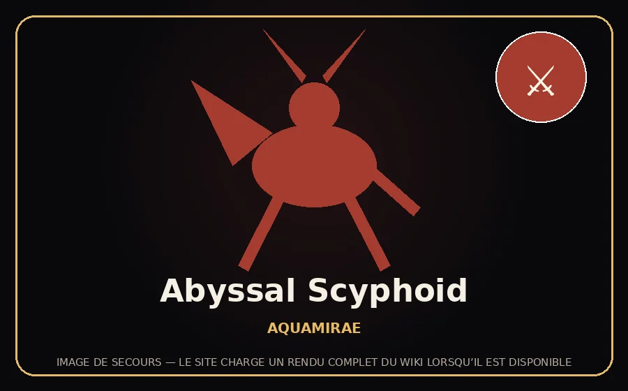
élevéAbyssal Scyphoid
Créature abyssale ou spectrale d’Aquamirae, principalement rencontrée dans l’Ice Maze et ses eaux gelées. Elle attaque le joueur et peut devenir encore plus dangereuse lorsqu’elle reçoit des affixes de Champion.
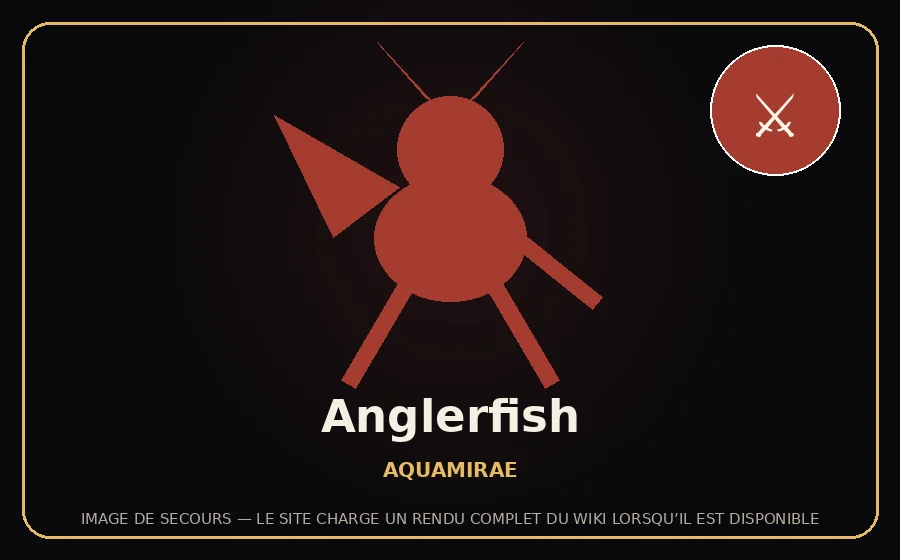
élevéAnglerfish
Créature abyssale ou spectrale d’Aquamirae, principalement rencontrée dans l’Ice Maze et ses eaux gelées. Elle attaque le joueur et peut devenir encore plus dangereuse lorsqu’elle reçoit des affixes de Champion.
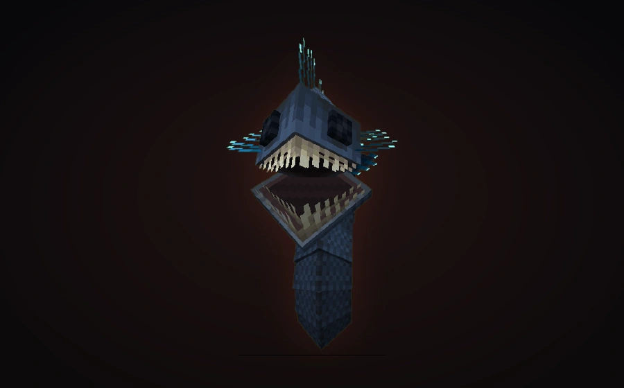
élevéEel
Créature abyssale ou spectrale d’Aquamirae, principalement rencontrée dans l’Ice Maze et ses eaux gelées. Elle attaque le joueur et peut devenir encore plus dangereuse lorsqu’elle reçoit des affixes de Champion.
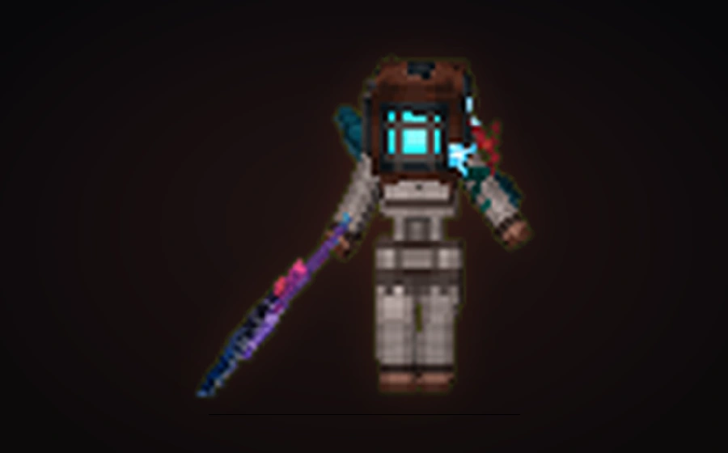
extrêmeGhost of Captain Cornelia
Créature abyssale ou spectrale d’Aquamirae, principalement rencontrée dans l’Ice Maze et ses eaux gelées. Il s’agit d’une rencontre majeure demandant préparation, lecture des attaques et équipement adapté.
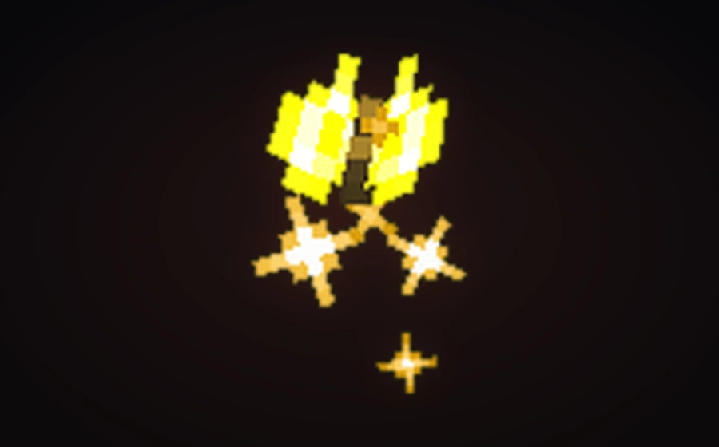
faibleGolden Moth
Créature abyssale ou spectrale d’Aquamirae, principalement rencontrée dans l’Ice Maze et ses eaux gelées. Elle n’attaque normalement pas le joueur sans condition spéciale.
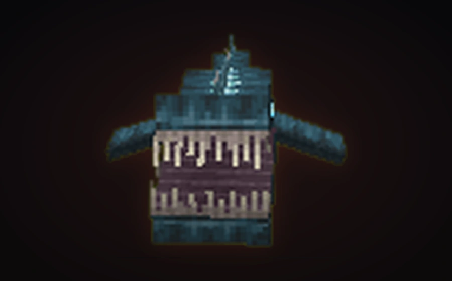
élevéMaw
Créature abyssale ou spectrale d’Aquamirae, principalement rencontrée dans l’Ice Maze et ses eaux gelées. Elle attaque le joueur et peut devenir encore plus dangereuse lorsqu’elle reçoit des affixes de Champion.
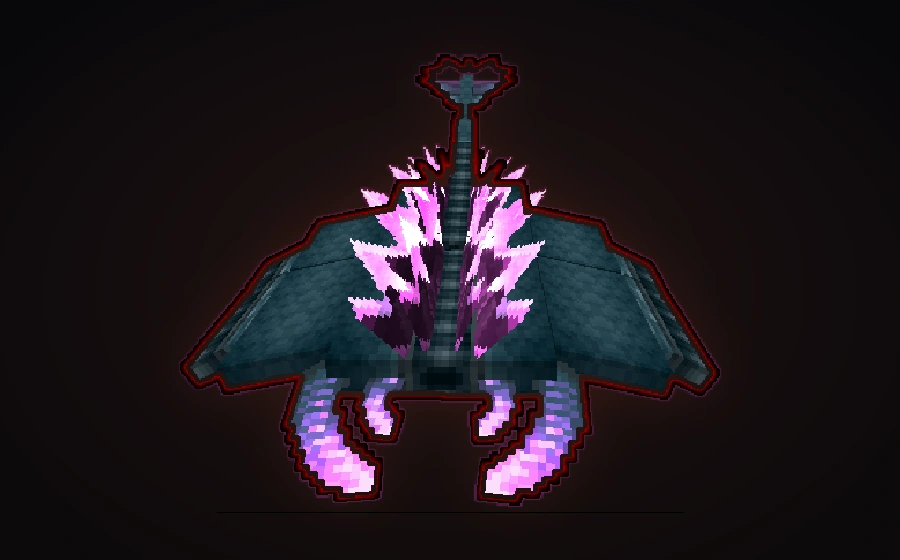
extrêmeMother of the Maze
Créature abyssale ou spectrale d’Aquamirae, principalement rencontrée dans l’Ice Maze et ses eaux gelées. Il s’agit d’une rencontre majeure demandant préparation, lecture des attaques et équipement adapté.
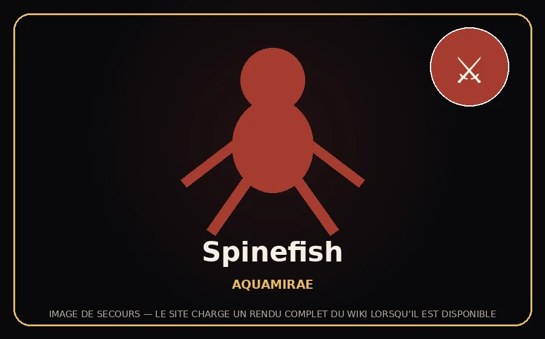
élevéSpinefish
Créature abyssale ou spectrale d’Aquamirae, principalement rencontrée dans l’Ice Maze et ses eaux gelées. Elle attaque le joueur et peut devenir encore plus dangereuse lorsqu’elle reçoit des affixes de Champion.
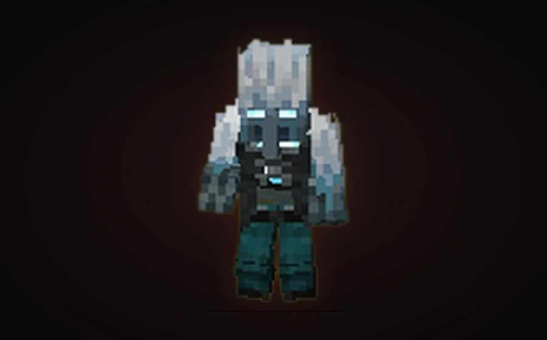
élevéTortured Soul
Créature abyssale ou spectrale d’Aquamirae, principalement rencontrée dans l’Ice Maze et ses eaux gelées. Elle attaque le joueur et peut devenir encore plus dangereuse lorsqu’elle reçoit des affixes de Champion.
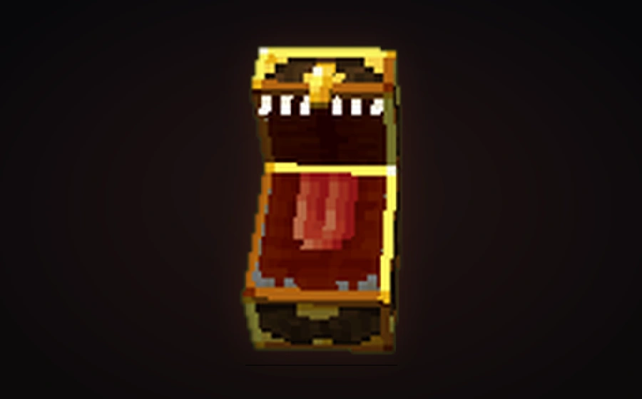
élevéMimic
Faux coffre vivant d’Artifacts, conçu pour surprendre les explorateurs dans les camps et structures. Elle attaque le joueur et peut devenir encore plus dangereuse lorsqu’elle reçoit des affixes de Champion.
Wither Ghost
Entité de combat ajoutée par Epic Fight pour enrichir certaines rencontres majeures. Elle attaque le joueur et peut devenir encore plus dangereuse lorsqu’elle reçoit des affixes de Champion.
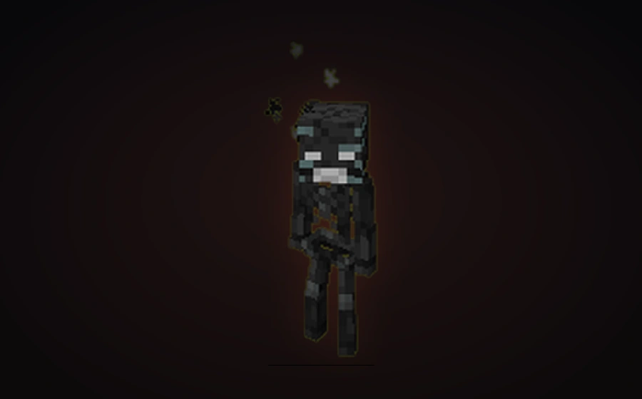
élevéWither's Minion
Entité de combat ajoutée par Epic Fight pour enrichir certaines rencontres majeures. Elle attaque le joueur et peut devenir encore plus dangereuse lorsqu’elle reçoit des affixes de Champion.
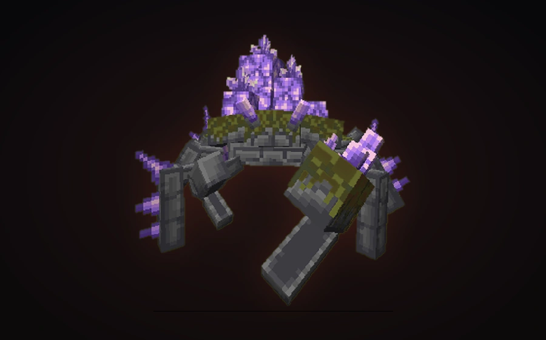
élevéAmethyst Crab
Créature de L’Ender’s Cataclysm, un mod centré sur des donjons et combats particulièrement exigeants. Elle attaque le joueur et peut devenir encore plus dangereuse lorsqu’elle reçoit des affixes de Champion.
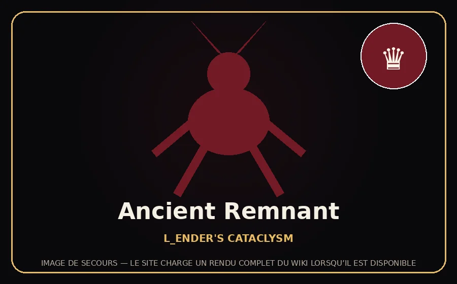
extrêmeAncient Remnant
Créature de L’Ender’s Cataclysm, un mod centré sur des donjons et combats particulièrement exigeants. Il s’agit d’une rencontre majeure demandant préparation, lecture des attaques et équipement adapté.
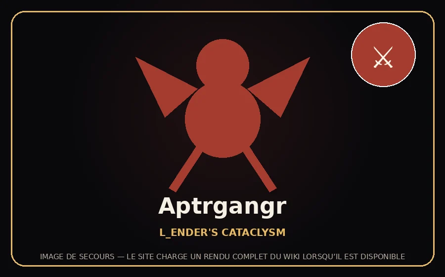
élevéAptrgangr
Créature de L’Ender’s Cataclysm, un mod centré sur des donjons et combats particulièrement exigeants. Elle attaque le joueur et peut devenir encore plus dangereuse lorsqu’elle reçoit des affixes de Champion.
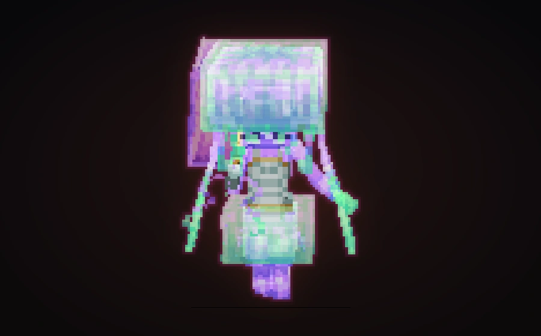
élevéCindaria
Créature de L’Ender’s Cataclysm, un mod centré sur des donjons et combats particulièrement exigeants. Elle attaque le joueur et peut devenir encore plus dangereuse lorsqu’elle reçoit des affixes de Champion.
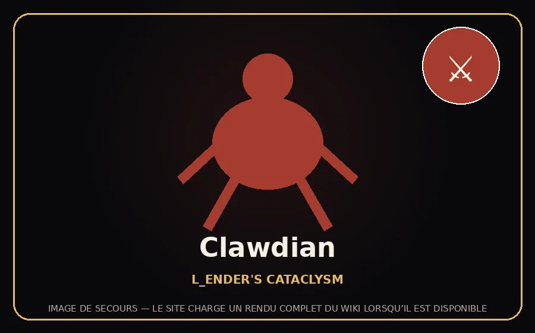
élevéClawdian
Créature de L’Ender’s Cataclysm, un mod centré sur des donjons et combats particulièrement exigeants. Elle attaque le joueur et peut devenir encore plus dangereuse lorsqu’elle reçoit des affixes de Champion.
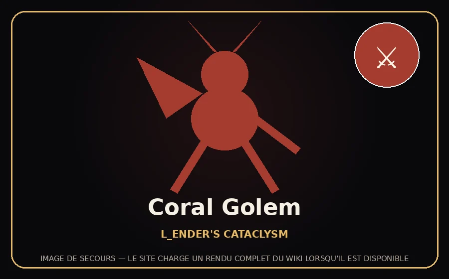
élevéCoral Golem
Créature de L’Ender’s Cataclysm, un mod centré sur des donjons et combats particulièrement exigeants. Elle attaque le joueur et peut devenir encore plus dangereuse lorsqu’elle reçoit des affixes de Champion.
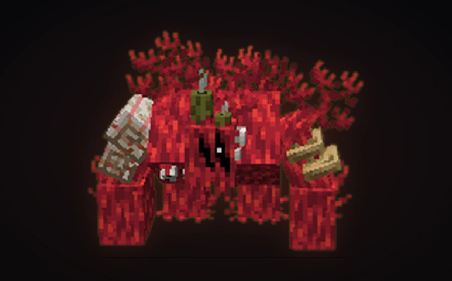
élevéCoralssus
Créature de L’Ender’s Cataclysm, un mod centré sur des donjons et combats particulièrement exigeants. Elle attaque le joueur et peut devenir encore plus dangereuse lorsqu’elle reçoit des affixes de Champion.
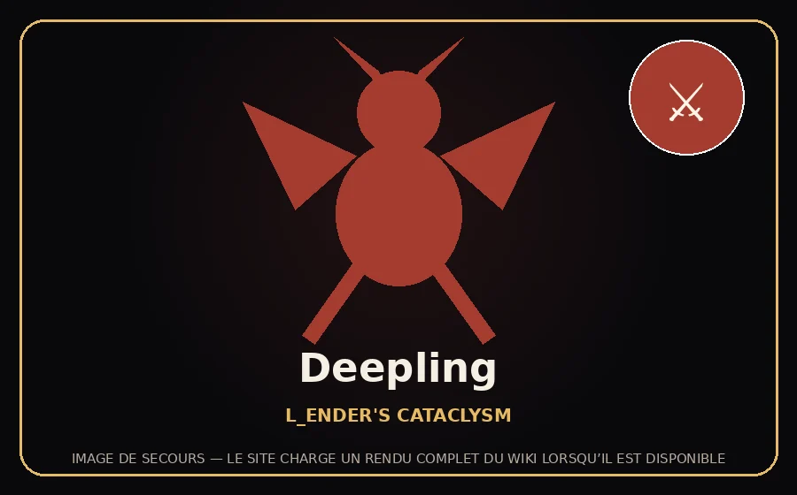
élevéDeepling
Créature de L’Ender’s Cataclysm, un mod centré sur des donjons et combats particulièrement exigeants. Elle attaque le joueur et peut devenir encore plus dangereuse lorsqu’elle reçoit des affixes de Champion.
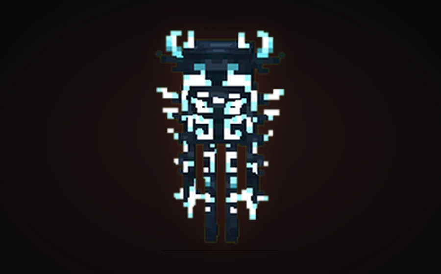
élevéDeepling Angler
Créature de L’Ender’s Cataclysm, un mod centré sur des donjons et combats particulièrement exigeants. Elle attaque le joueur et peut devenir encore plus dangereuse lorsqu’elle reçoit des affixes de Champion.
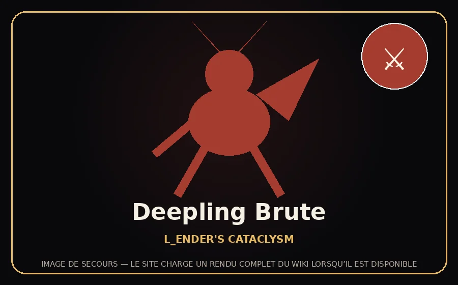
élevéDeepling Brute
Créature de L’Ender’s Cataclysm, un mod centré sur des donjons et combats particulièrement exigeants. Elle attaque le joueur et peut devenir encore plus dangereuse lorsqu’elle reçoit des affixes de Champion.
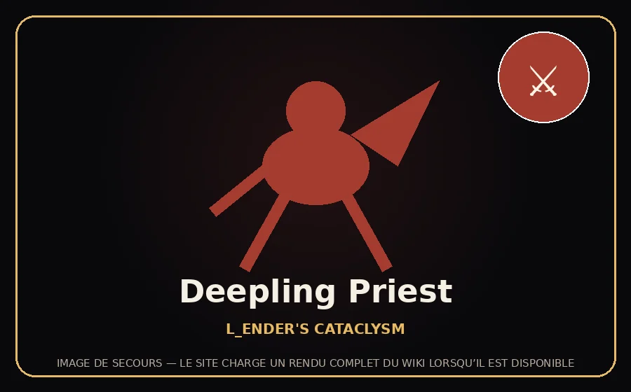
élevéDeepling Priest
Créature de L’Ender’s Cataclysm, un mod centré sur des donjons et combats particulièrement exigeants. Elle attaque le joueur et peut devenir encore plus dangereuse lorsqu’elle reçoit des affixes de Champion.
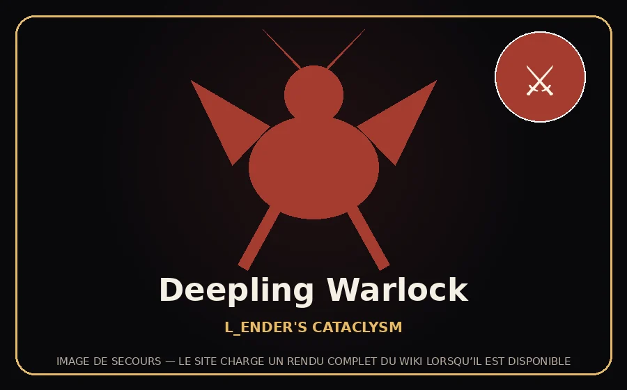
élevéDeepling Warlock
Créature de L’Ender’s Cataclysm, un mod centré sur des donjons et combats particulièrement exigeants. Elle attaque le joueur et peut devenir encore plus dangereuse lorsqu’elle reçoit des affixes de Champion.
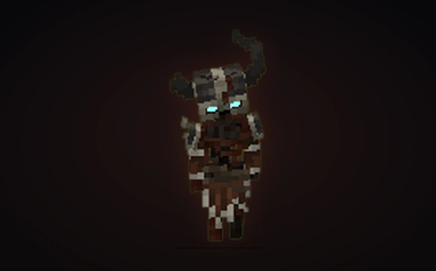
élevéDraugr
Créature de L’Ender’s Cataclysm, un mod centré sur des donjons et combats particulièrement exigeants. Elle attaque le joueur et peut devenir encore plus dangereuse lorsqu’elle reçoit des affixes de Champion.
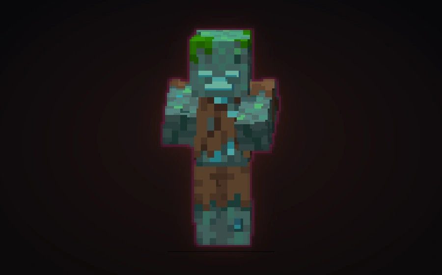
élevéDrowned Host
Créature de L’Ender’s Cataclysm, un mod centré sur des donjons et combats particulièrement exigeants. Elle attaque le joueur et peut devenir encore plus dangereuse lorsqu’elle reçoit des affixes de Champion.
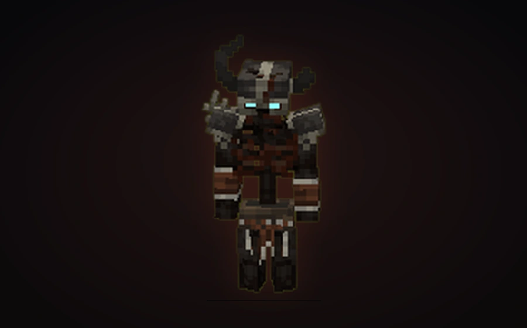
élevéElite Draugr
Créature de L’Ender’s Cataclysm, un mod centré sur des donjons et combats particulièrement exigeants. Elle attaque le joueur et peut devenir encore plus dangereuse lorsqu’elle reçoit des affixes de Champion.
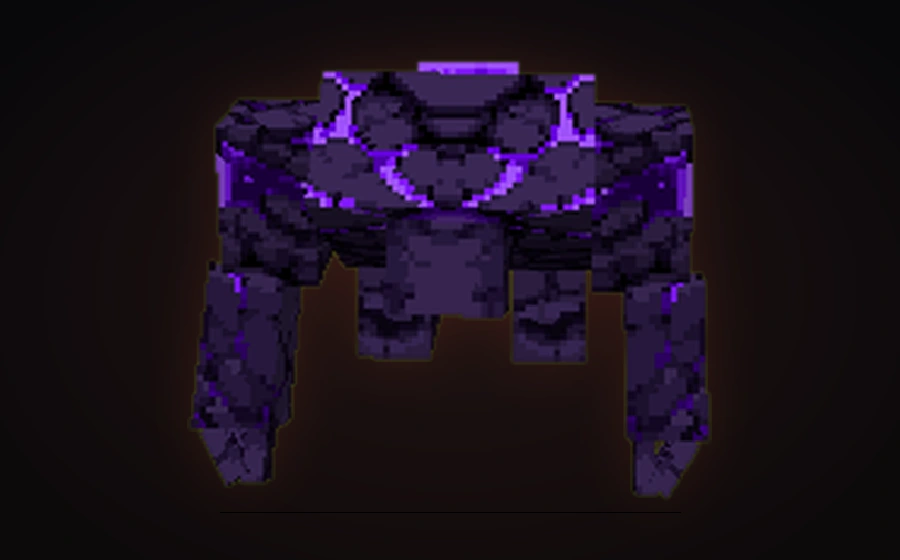
élevéEnder Golem
Créature de L’Ender’s Cataclysm, un mod centré sur des donjons et combats particulièrement exigeants. Elle attaque le joueur et peut devenir encore plus dangereuse lorsqu’elle reçoit des affixes de Champion.
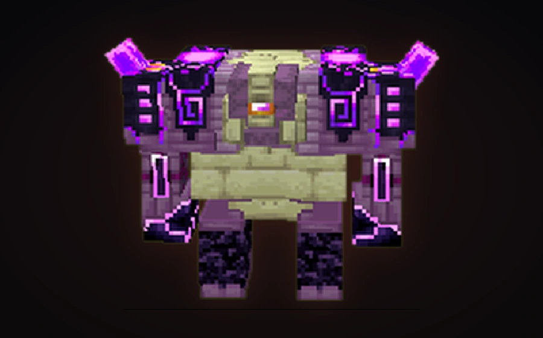
extrêmeEnder Guardian
Créature de L’Ender’s Cataclysm, un mod centré sur des donjons et combats particulièrement exigeants. Il s’agit d’une rencontre majeure demandant préparation, lecture des attaques et équipement adapté.
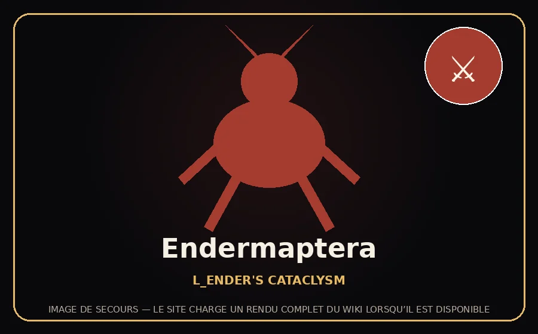
élevéEndermaptera
Créature de L’Ender’s Cataclysm, un mod centré sur des donjons et combats particulièrement exigeants. Elle attaque le joueur et peut devenir encore plus dangereuse lorsqu’elle reçoit des affixes de Champion.
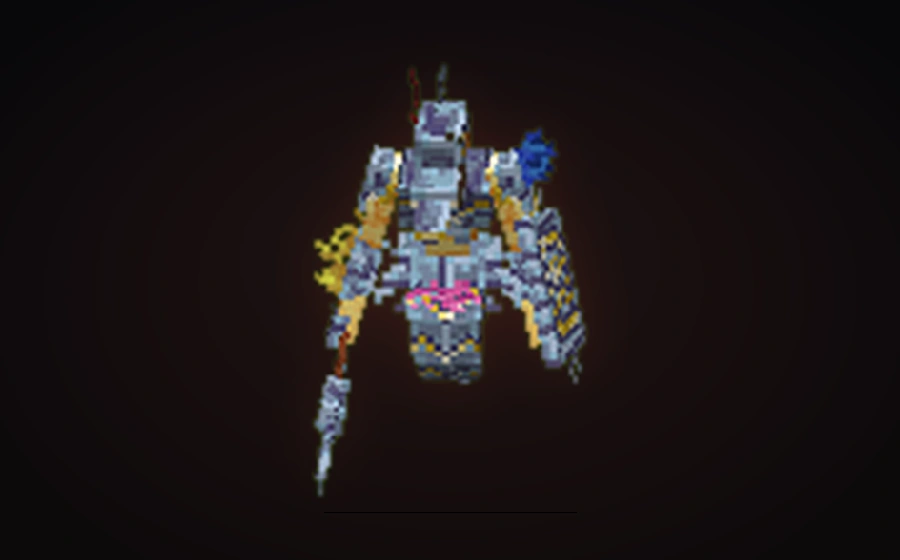
élevéHippocamtus
Créature de L’Ender’s Cataclysm, un mod centré sur des donjons et combats particulièrement exigeants. Elle attaque le joueur et peut devenir encore plus dangereuse lorsqu’elle reçoit des affixes de Champion.
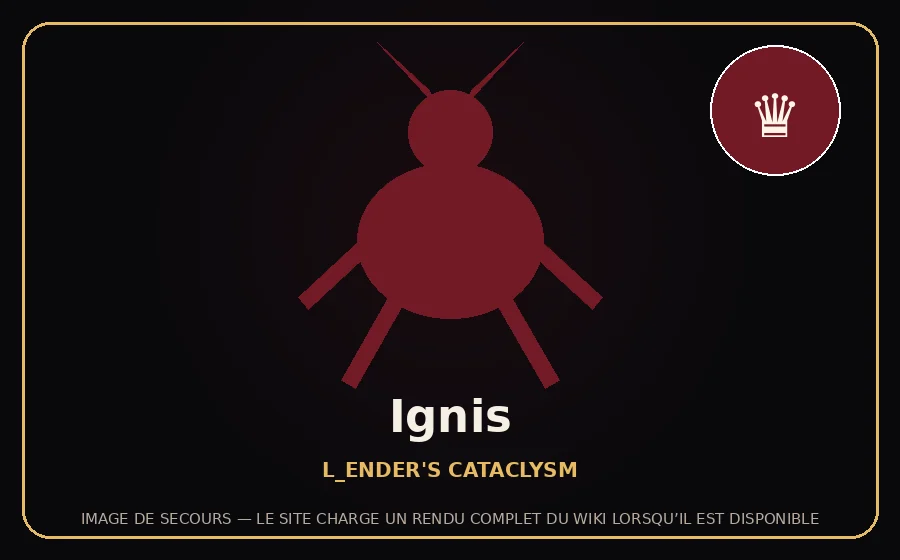
extrêmeIgnis
Créature de L’Ender’s Cataclysm, un mod centré sur des donjons et combats particulièrement exigeants. Il s’agit d’une rencontre majeure demandant préparation, lecture des attaques et équipement adapté.
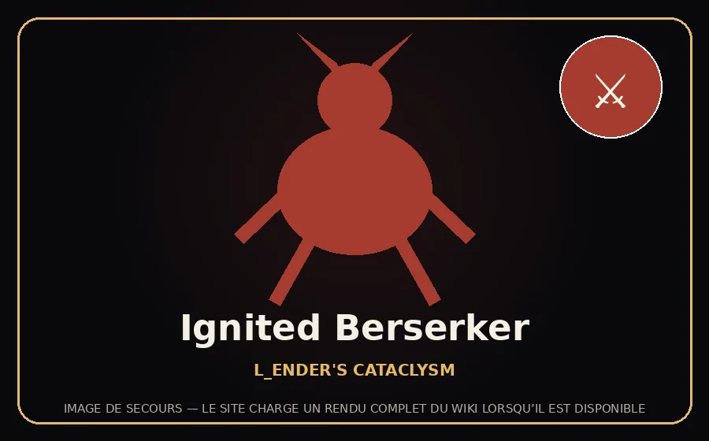
élevéIgnited Berserker
Créature de L’Ender’s Cataclysm, un mod centré sur des donjons et combats particulièrement exigeants. Elle attaque le joueur et peut devenir encore plus dangereuse lorsqu’elle reçoit des affixes de Champion.
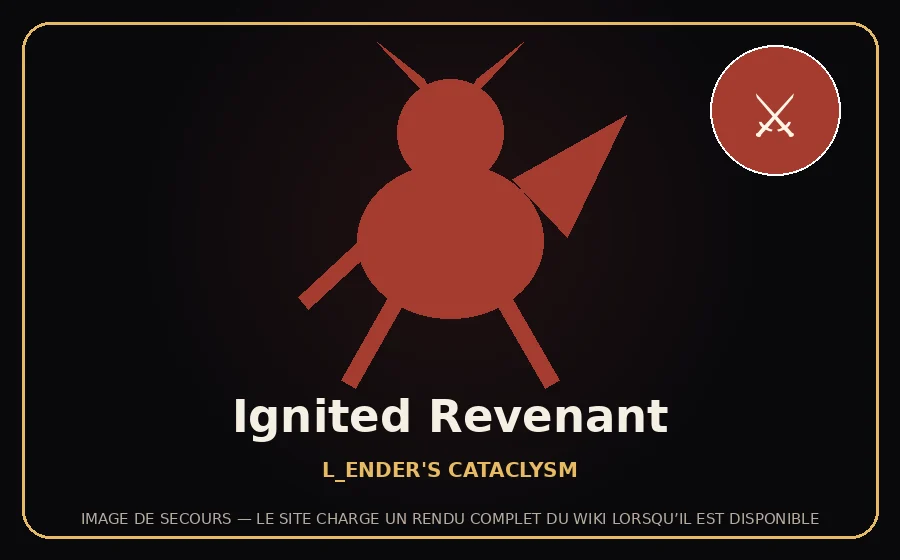
élevéIgnited Revenant
Créature de L’Ender’s Cataclysm, un mod centré sur des donjons et combats particulièrement exigeants. Elle attaque le joueur et peut devenir encore plus dangereuse lorsqu’elle reçoit des affixes de Champion.
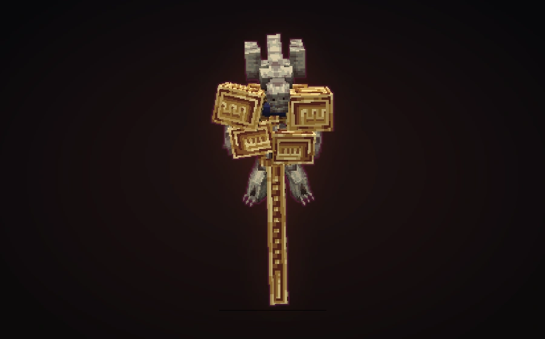
élevéKobolediator
Créature de L’Ender’s Cataclysm, un mod centré sur des donjons et combats particulièrement exigeants. Elle attaque le joueur et peut devenir encore plus dangereuse lorsqu’elle reçoit des affixes de Champion.
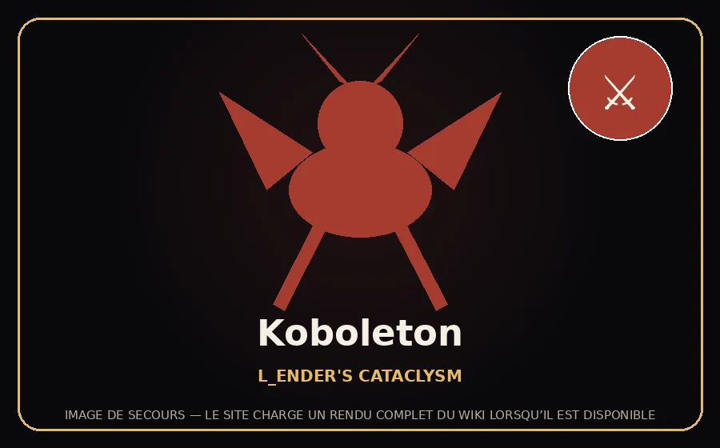
élevéKoboleton
Créature de L’Ender’s Cataclysm, un mod centré sur des donjons et combats particulièrement exigeants. Elle attaque le joueur et peut devenir encore plus dangereuse lorsqu’elle reçoit des affixes de Champion.
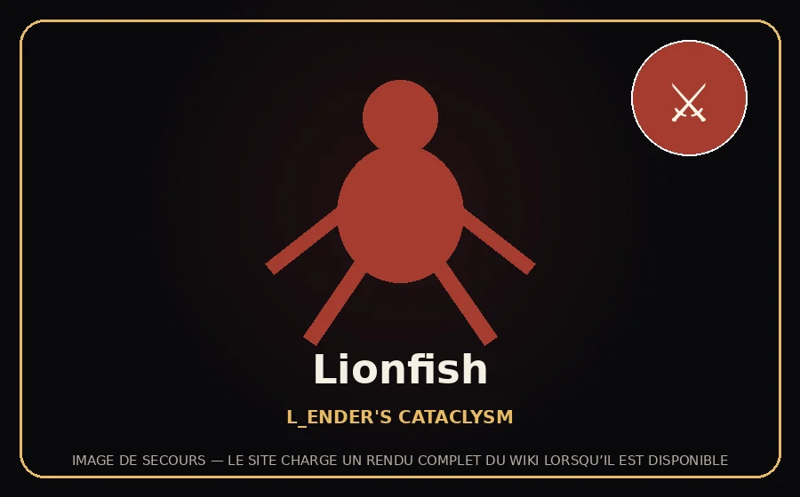
élevéLionfish
Créature de L’Ender’s Cataclysm, un mod centré sur des donjons et combats particulièrement exigeants. Elle attaque le joueur et peut devenir encore plus dangereuse lorsqu’elle reçoit des affixes de Champion.
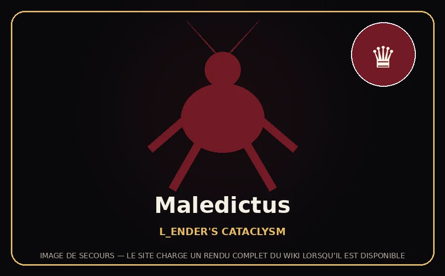
extrêmeMaledictus
Créature de L’Ender’s Cataclysm, un mod centré sur des donjons et combats particulièrement exigeants. Il s’agit d’une rencontre majeure demandant préparation, lecture des attaques et équipement adapté.
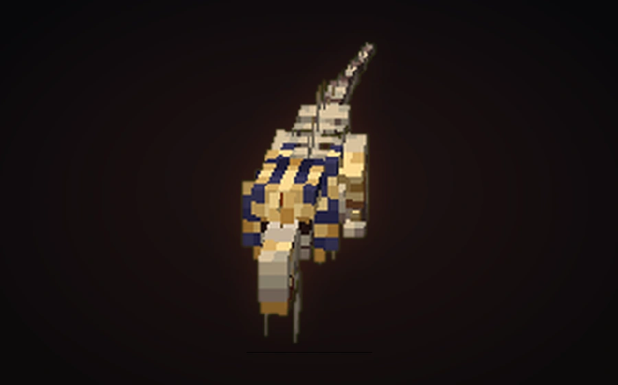
élevéModern Remnant
Créature de L’Ender’s Cataclysm, un mod centré sur des donjons et combats particulièrement exigeants. Elle attaque le joueur et peut devenir encore plus dangereuse lorsqu’elle reçoit des affixes de Champion.
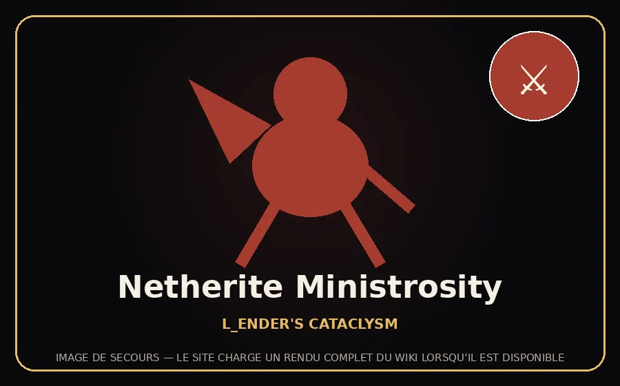
élevéNetherite Ministrosity
Créature de L’Ender’s Cataclysm, un mod centré sur des donjons et combats particulièrement exigeants. Elle attaque le joueur et peut devenir encore plus dangereuse lorsqu’elle reçoit des affixes de Champion.
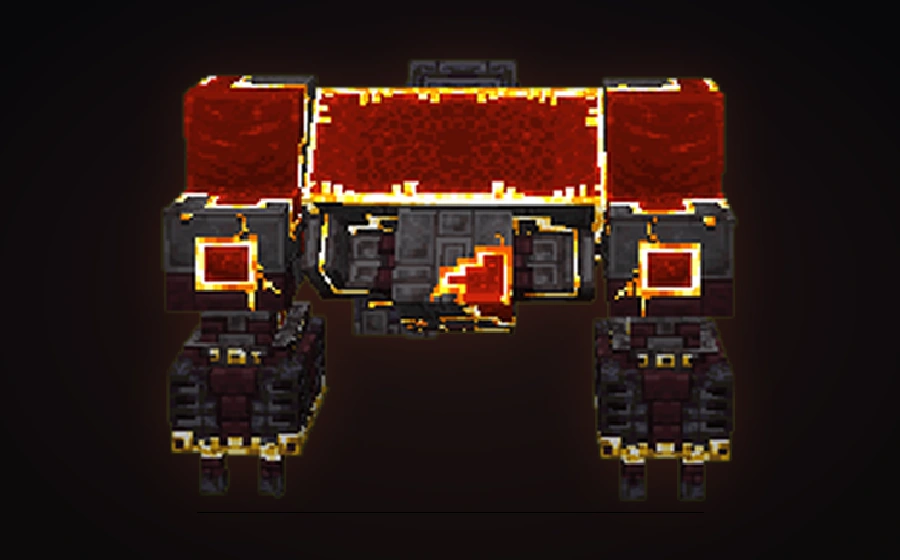
extrêmeNetherite Monstrosity
Créature de L’Ender’s Cataclysm, un mod centré sur des donjons et combats particulièrement exigeants. Il s’agit d’une rencontre majeure demandant préparation, lecture des attaques et équipement adapté.
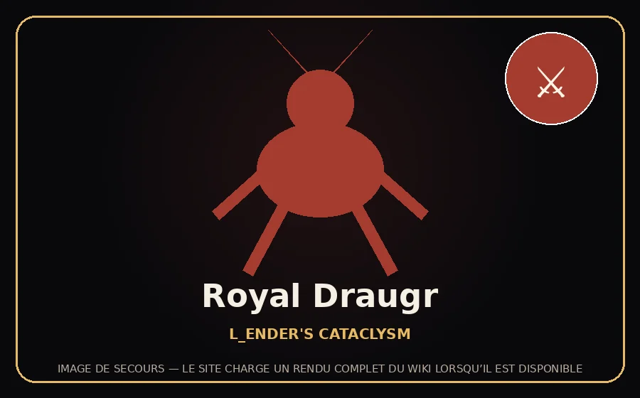
élevéRoyal Draugr
Créature de L’Ender’s Cataclysm, un mod centré sur des donjons et combats particulièrement exigeants. Elle attaque le joueur et peut devenir encore plus dangereuse lorsqu’elle reçoit des affixes de Champion.
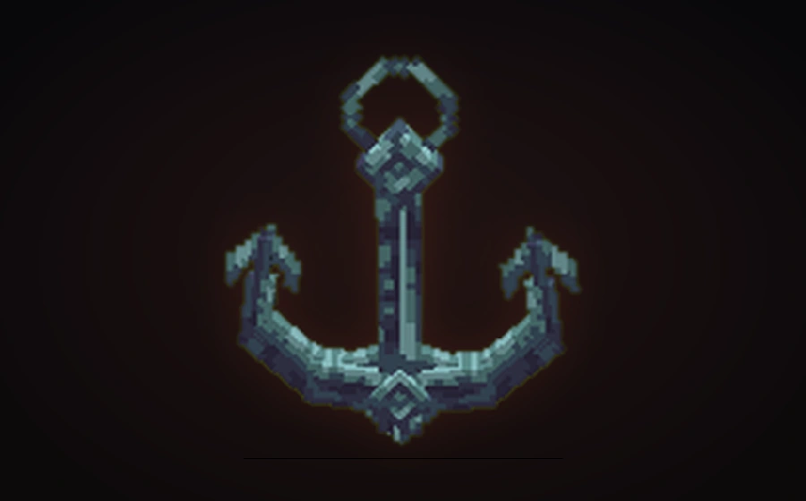
extrêmeScylla
Créature de L’Ender’s Cataclysm, un mod centré sur des donjons et combats particulièrement exigeants. Il s’agit d’une rencontre majeure demandant préparation, lecture des attaques et équipement adapté.
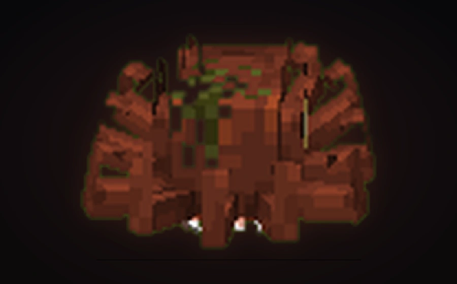
élevéSymbiocto
Créature de L’Ender’s Cataclysm, un mod centré sur des donjons et combats particulièrement exigeants. Elle attaque le joueur et peut devenir encore plus dangereuse lorsqu’elle reçoit des affixes de Champion.
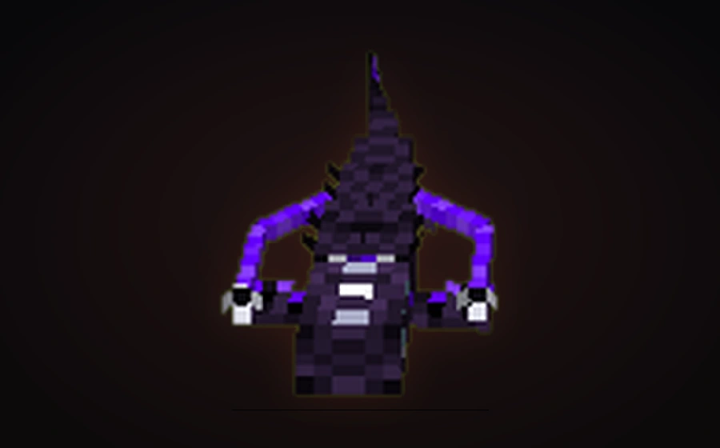
élevéThe Baby Leviathan
Créature de L’Ender’s Cataclysm, un mod centré sur des donjons et combats particulièrement exigeants. Elle attaque le joueur et peut devenir encore plus dangereuse lorsqu’elle reçoit des affixes de Champion.
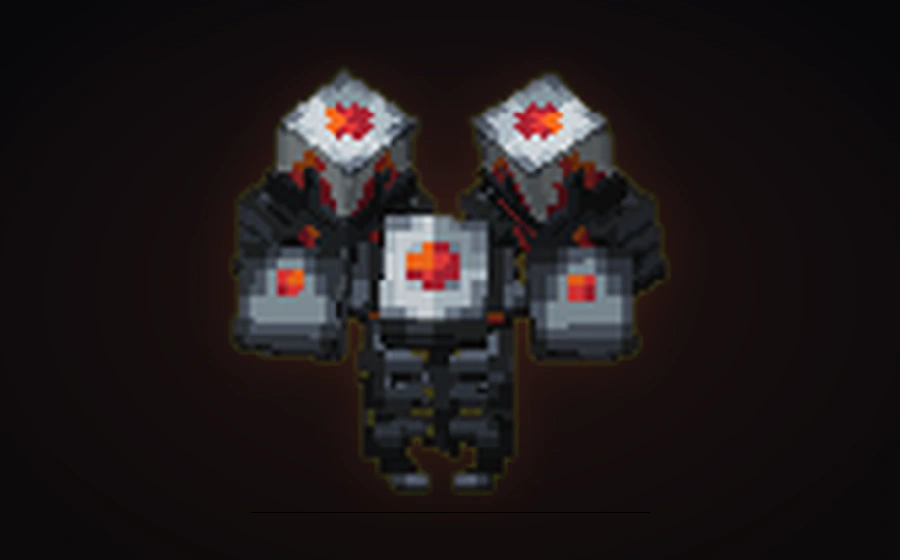
extrêmeThe Harbinger
Créature de L’Ender’s Cataclysm, un mod centré sur des donjons et combats particulièrement exigeants. Il s’agit d’une rencontre majeure demandant préparation, lecture des attaques et équipement adapté.
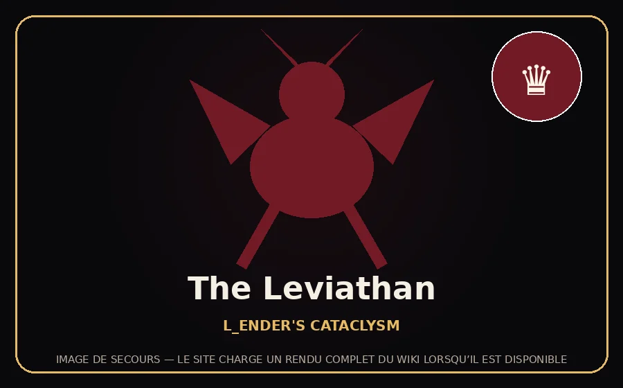
extrêmeThe Leviathan
Créature de L’Ender’s Cataclysm, un mod centré sur des donjons et combats particulièrement exigeants. Il s’agit d’une rencontre majeure demandant préparation, lecture des attaques et équipement adapté.
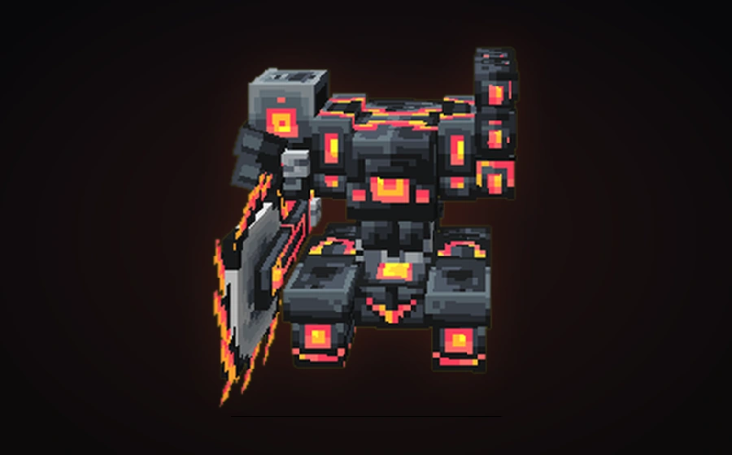
élevéThe Prowler
Créature de L’Ender’s Cataclysm, un mod centré sur des donjons et combats particulièrement exigeants. Elle attaque le joueur et peut devenir encore plus dangereuse lorsqu’elle reçoit des affixes de Champion.
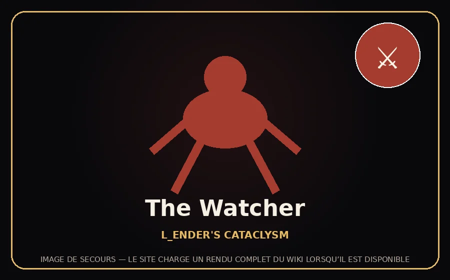
élevéThe Watcher
Créature de L’Ender’s Cataclysm, un mod centré sur des donjons et combats particulièrement exigeants. Elle attaque le joueur et peut devenir encore plus dangereuse lorsqu’elle reçoit des affixes de Champion.
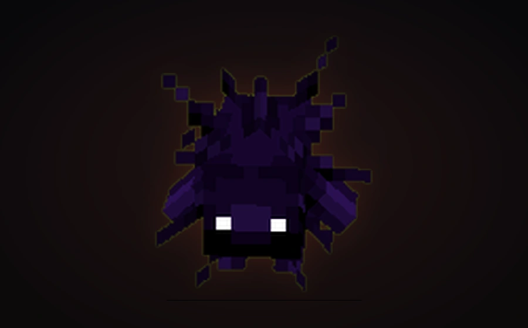
élevéUrchinkin
Créature de L’Ender’s Cataclysm, un mod centré sur des donjons et combats particulièrement exigeants. Elle attaque le joueur et peut devenir encore plus dangereuse lorsqu’elle reçoit des affixes de Champion.
Wadjet
Créature de L’Ender’s Cataclysm, un mod centré sur des donjons et combats particulièrement exigeants. Elle attaque le joueur et peut devenir encore plus dangereuse lorsqu’elle reçoit des affixes de Champion.
Cursed Armor
Créature ajoutée par la difficulté progressive. Sa présence augmente avec les systèmes de difficulté du monde. Elle attaque le joueur et peut devenir encore plus dangereuse lorsqu’elle reçoit des affixes de Champion.
Cerberus
Créature ajoutée par la difficulté progressive. Sa présence augmente avec les systèmes de difficulté du monde. Il s’agit d’une rencontre majeure demandant préparation, lecture des attaques et équipement adapté.
Tank
Créature ajoutée par la difficulté progressive. Sa présence augmente avec les systèmes de difficulté du monde. Elle attaque le joueur et peut devenir encore plus dangereuse lorsqu’elle reçoit des affixes de Champion.
Giant
Créature ajoutée par la difficulté progressive. Sa présence augmente avec les systèmes de difficulté du monde. Elle attaque le joueur et peut devenir encore plus dangereuse lorsqu’elle reçoit des affixes de Champion.
Illusioner
Créature ajoutée par la difficulté progressive. Sa présence augmente avec les systèmes de difficulté du monde. Elle attaque le joueur et peut devenir encore plus dangereuse lorsqu’elle reçoit des affixes de Champion.
Creeperling
Créature ajoutée par la difficulté progressive. Sa présence augmente avec les systèmes de difficulté du monde. Elle attaque le joueur et peut devenir encore plus dangereuse lorsqu’elle reçoit des affixes de Champion.
Bluff
Créature animée et tactique de Mowzie’s Mobs. Ses attaques sont généralement très lisibles, mais sévèrement punissantes. Elle attaque le joueur et peut devenir encore plus dangereuse lorsqu’elle reçoit des affixes de Champion.
Elokosa
Créature animée et tactique de Mowzie’s Mobs. Ses attaques sont généralement très lisibles, mais sévèrement punissantes. Elle attaque le joueur et peut devenir encore plus dangereuse lorsqu’elle reçoit des affixes de Champion.
Elokosa Howler
Créature animée et tactique de Mowzie’s Mobs. Ses attaques sont généralement très lisibles, mais sévèrement punissantes. Elle attaque le joueur et peut devenir encore plus dangereuse lorsqu’elle reçoit des affixes de Champion.
Ferrous Wroughtnaut
Créature animée et tactique de Mowzie’s Mobs. Ses attaques sont généralement très lisibles, mais sévèrement punissantes. Il s’agit d’une rencontre majeure demandant préparation, lecture des attaques et équipement adapté.
Foliaath
Créature animée et tactique de Mowzie’s Mobs. Ses attaques sont généralement très lisibles, mais sévèrement punissantes. Elle attaque le joueur et peut devenir encore plus dangereuse lorsqu’elle reçoit des affixes de Champion.
Frostmaw
Créature animée et tactique de Mowzie’s Mobs. Ses attaques sont généralement très lisibles, mais sévèrement punissantes. Il s’agit d’une rencontre majeure demandant préparation, lecture des attaques et équipement adapté.
Grottol
Créature animée et tactique de Mowzie’s Mobs. Ses attaques sont généralement très lisibles, mais sévèrement punissantes. Elle n’attaque normalement pas le joueur sans condition spéciale.
Lantern
Créature animée et tactique de Mowzie’s Mobs. Ses attaques sont généralement très lisibles, mais sévèrement punissantes. Elle n’attaque normalement pas le joueur sans condition spéciale.
Naga
Créature animée et tactique de Mowzie’s Mobs. Ses attaques sont généralement très lisibles, mais sévèrement punissantes. Elle attaque le joueur et peut devenir encore plus dangereuse lorsqu’elle reçoit des affixes de Champion.
Tongbi, the Sculptor
Créature animée et tactique de Mowzie’s Mobs. Ses attaques sont généralement très lisibles, mais sévèrement punissantes. Il s’agit d’une rencontre majeure demandant préparation, lecture des attaques et équipement adapté.
Umvuthana
Créature animée et tactique de Mowzie’s Mobs. Ses attaques sont généralement très lisibles, mais sévèrement punissantes.
Umvuthana Crane
Créature animée et tactique de Mowzie’s Mobs. Ses attaques sont généralement très lisibles, mais sévèrement punissantes.
Umvuthana Raptor
Créature animée et tactique de Mowzie’s Mobs. Ses attaques sont généralement très lisibles, mais sévèrement punissantes.
Umvuthi, the Sunbird
Créature animée et tactique de Mowzie’s Mobs. Ses attaques sont généralement très lisibles, mais sévèrement punissantes. Il s’agit d’une rencontre majeure demandant préparation, lecture des attaques et équipement adapté.
Awful Ghast
Gardien d’un donjon de Stalwart Dungeons. La rencontre est liée à une structure du Nether ou de l’End. Il s’agit d’une rencontre majeure demandant préparation, lecture des attaques et équipement adapté.
Giddy Blaze
Gardien d’un donjon de Stalwart Dungeons. La rencontre est liée à une structure du Nether ou de l’End. Elle attaque le joueur et peut devenir encore plus dangereuse lorsqu’elle reçoit des affixes de Champion.
Incomplete Wither
Gardien d’un donjon de Stalwart Dungeons. La rencontre est liée à une structure du Nether ou de l’End. Il s’agit d’une rencontre majeure demandant préparation, lecture des attaques et équipement adapté.
Nether Keeper
Gardien d’un donjon de Stalwart Dungeons. La rencontre est liée à une structure du Nether ou de l’End. Il s’agit d’une rencontre majeure demandant préparation, lecture des attaques et équipement adapté.
Propulk
Gardien d’un donjon de Stalwart Dungeons. La rencontre est liée à une structure du Nether ou de l’End. Elle attaque le joueur et peut devenir encore plus dangereuse lorsqu’elle reçoit des affixes de Champion.
Reinforced Blaze
Gardien d’un donjon de Stalwart Dungeons. La rencontre est liée à une structure du Nether ou de l’End. Elle attaque le joueur et peut devenir encore plus dangereuse lorsqu’elle reçoit des affixes de Champion.
Shelterer
Gardien d’un donjon de Stalwart Dungeons. La rencontre est liée à une structure du Nether ou de l’End. Il s’agit d’une rencontre majeure demandant préparation, lecture des attaques et équipement adapté.
Adherent
Créature native de la Forêt du Crépuscule, dimension structurée autour d’une progression de boss et de biomes magiques. Elle attaque le joueur et peut devenir encore plus dangereuse lorsqu’elle reçoit des affixes de Champion.
Hedge Spider
Créature native de la Forêt du Crépuscule, dimension structurée autour d’une progression de boss et de biomes magiques. Elle attaque le joueur et peut devenir encore plus dangereuse lorsqu’elle reçoit des affixes de Champion.
Boar
Créature native de la Forêt du Crépuscule, dimension structurée autour d’une progression de boss et de biomes magiques. Elle n’attaque normalement pas le joueur sans condition spéciale.
Quest Ram
Créature native de la Forêt du Crépuscule, dimension structurée autour d’une progression de boss et de biomes magiques. Elle n’attaque normalement pas le joueur sans condition spéciale.
Carminite Broodling
Créature native de la Forêt du Crépuscule, dimension structurée autour d’une progression de boss et de biomes magiques. Elle attaque le joueur et peut devenir encore plus dangereuse lorsqu’elle reçoit des affixes de Champion.
Carminite Ghastguard
Créature native de la Forêt du Crépuscule, dimension structurée autour d’une progression de boss et de biomes magiques. Elle attaque le joueur et peut devenir encore plus dangereuse lorsqu’elle reçoit des affixes de Champion.
Carminite Ghastling
Créature native de la Forêt du Crépuscule, dimension structurée autour d’une progression de boss et de biomes magiques. Elle attaque le joueur et peut devenir encore plus dangereuse lorsqu’elle reçoit des affixes de Champion.
Helmet Crab
Créature native de la Forêt du Crépuscule, dimension structurée autour d’une progression de boss et de biomes magiques. Elle attaque le joueur et peut devenir encore plus dangereuse lorsqu’elle reçoit des affixes de Champion.
Knight Phantom
Créature native de la Forêt du Crépuscule, dimension structurée autour d’une progression de boss et de biomes magiques. Il s’agit d’une rencontre majeure demandant préparation, lecture des attaques et équipement adapté.
Lower Goblin Knight
Créature native de la Forêt du Crépuscule, dimension structurée autour d’une progression de boss et de biomes magiques. Elle attaque le joueur et peut devenir encore plus dangereuse lorsqu’elle reçoit des affixes de Champion.
Upper Goblin Knight
Créature native de la Forêt du Crépuscule, dimension structurée autour d’une progression de boss et de biomes magiques. Elle attaque le joueur et peut devenir encore plus dangereuse lorsqu’elle reçoit des affixes de Champion.
Unstable Ice Core
Créature native de la Forêt du Crépuscule, dimension structurée autour d’une progression de boss et de biomes magiques. Elle attaque le joueur et peut devenir encore plus dangereuse lorsqu’elle reçoit des affixes de Champion.
Stable Ice Core
Créature native de la Forêt du Crépuscule, dimension structurée autour d’une progression de boss et de biomes magiques. Elle attaque le joueur et peut devenir encore plus dangereuse lorsqu’elle reçoit des affixes de Champion.
Pinch Beetle
Créature native de la Forêt du Crépuscule, dimension structurée autour d’une progression de boss et de biomes magiques. Elle attaque le joueur et peut devenir encore plus dangereuse lorsqu’elle reçoit des affixes de Champion.
Fire Beetle
Créature native de la Forêt du Crépuscule, dimension structurée autour d’une progression de boss et de biomes magiques. Elle attaque le joueur et peut devenir encore plus dangereuse lorsqu’elle reçoit des affixes de Champion.
Slime Beetle
Créature native de la Forêt du Crépuscule, dimension structurée autour d’une progression de boss et de biomes magiques. Elle attaque le joueur et peut devenir encore plus dangereuse lorsqu’elle reçoit des affixes de Champion.
Ice Crystal
Créature native de la Forêt du Crépuscule, dimension structurée autour d’une progression de boss et de biomes magiques. Elle attaque le joueur et peut devenir encore plus dangereuse lorsqu’elle reçoit des affixes de Champion.
Deer
Créature native de la Forêt du Crépuscule, dimension structurée autour d’une progression de boss et de biomes magiques. Elle n’attaque normalement pas le joueur sans condition spéciale.
Swarm Spider
Créature native de la Forêt du Crépuscule, dimension structurée autour d’une progression de boss et de biomes magiques. Elle attaque le joueur et peut devenir encore plus dangereuse lorsqu’elle reçoit des affixes de Champion.
Mosquito Swarm
Créature native de la Forêt du Crépuscule, dimension structurée autour d’une progression de boss et de biomes magiques. Elle attaque le joueur et peut devenir encore plus dangereuse lorsqu’elle reçoit des affixes de Champion.
Towerwood Borer
Créature native de la Forêt du Crépuscule, dimension structurée autour d’une progression de boss et de biomes magiques. Elle attaque le joueur et peut devenir encore plus dangereuse lorsqu’elle reçoit des affixes de Champion.
Snow Guardian
Créature native de la Forêt du Crépuscule, dimension structurée autour d’une progression de boss et de biomes magiques. Elle attaque le joueur et peut devenir encore plus dangereuse lorsqu’elle reçoit des affixes de Champion.
Block and Chain Goblin
Créature native de la Forêt du Crépuscule, dimension structurée autour d’une progression de boss et de biomes magiques. Elle attaque le joueur et peut devenir encore plus dangereuse lorsqu’elle reçoit des affixes de Champion.
Carminite Golem
Créature native de la Forêt du Crépuscule, dimension structurée autour d’une progression de boss et de biomes magiques. Elle attaque le joueur et peut devenir encore plus dangereuse lorsqu’elle reçoit des affixes de Champion.
Armored Giant
Créature native de la Forêt du Crépuscule, dimension structurée autour d’une progression de boss et de biomes magiques. Elle attaque le joueur et peut devenir encore plus dangereuse lorsqu’elle reçoit des affixes de Champion.
Harbinger Cube
Créature native de la Forêt du Crépuscule, dimension structurée autour d’une progression de boss et de biomes magiques. Elle attaque le joueur et peut devenir encore plus dangereuse lorsqu’elle reçoit des affixes de Champion.
Hydra
Créature native de la Forêt du Crépuscule, dimension structurée autour d’une progression de boss et de biomes magiques. Il s’agit d’une rencontre majeure demandant préparation, lecture des attaques et équipement adapté.
Kobold
Créature native de la Forêt du Crépuscule, dimension structurée autour d’une progression de boss et de biomes magiques. Elle attaque le joueur et peut devenir encore plus dangereuse lorsqu’elle reçoit des affixes de Champion.
Dwarf Rabbit
Créature native de la Forêt du Crépuscule, dimension structurée autour d’une progression de boss et de biomes magiques. Elle n’attaque normalement pas le joueur sans condition spéciale.
Lich
Créature native de la Forêt du Crépuscule, dimension structurée autour d’une progression de boss et de biomes magiques. Il s’agit d’une rencontre majeure demandant préparation, lecture des attaques et équipement adapté.
Winter Wolf
Créature native de la Forêt du Crépuscule, dimension structurée autour d’une progression de boss et de biomes magiques. Elle attaque le joueur et peut devenir encore plus dangereuse lorsqu’elle reçoit des affixes de Champion.
Mist Wolf
Créature native de la Forêt du Crépuscule, dimension structurée autour d’une progression de boss et de biomes magiques. Elle attaque le joueur et peut devenir encore plus dangereuse lorsqu’elle reçoit des affixes de Champion.
Hostile Wolf
Créature native de la Forêt du Crépuscule, dimension structurée autour d’une progression de boss et de biomes magiques. Elle attaque le joueur et peut devenir encore plus dangereuse lorsqu’elle reçoit des affixes de Champion.
Penguin
Créature native de la Forêt du Crépuscule, dimension structurée autour d’une progression de boss et de biomes magiques. Elle n’attaque normalement pas le joueur sans condition spéciale.
Giant Miner
Créature native de la Forêt du Crépuscule, dimension structurée autour d’une progression de boss et de biomes magiques. Elle attaque le joueur et peut devenir encore plus dangereuse lorsqu’elle reçoit des affixes de Champion.
Minoshroom
Créature native de la Forêt du Crépuscule, dimension structurée autour d’une progression de boss et de biomes magiques. Il s’agit d’une rencontre majeure demandant préparation, lecture des attaques et équipement adapté.
Minotaur
Créature native de la Forêt du Crépuscule, dimension structurée autour d’une progression de boss et de biomes magiques. Elle attaque le joueur et peut devenir encore plus dangereuse lorsqu’elle reçoit des affixes de Champion.
Bighorn Sheep
Créature native de la Forêt du Crépuscule, dimension structurée autour d’une progression de boss et de biomes magiques. Elle n’attaque normalement pas le joueur sans condition spéciale.
Naga
Créature native de la Forêt du Crépuscule, dimension structurée autour d’une progression de boss et de biomes magiques. Il s’agit d’une rencontre majeure demandant préparation, lecture des attaques et équipement adapté.
Tiny Bird
Créature native de la Forêt du Crépuscule, dimension structurée autour d’une progression de boss et de biomes magiques. Elle n’attaque normalement pas le joueur sans condition spéciale.
Raven
Créature native de la Forêt du Crépuscule, dimension structurée autour d’une progression de boss et de biomes magiques. Elle n’attaque normalement pas le joueur sans condition spéciale.
Redcap
Créature native de la Forêt du Crépuscule, dimension structurée autour d’une progression de boss et de biomes magiques. Elle attaque le joueur et peut devenir encore plus dangereuse lorsqu’elle reçoit des affixes de Champion.
King Spider
Créature native de la Forêt du Crépuscule, dimension structurée autour d’une progression de boss et de biomes magiques. Elle attaque le joueur et peut devenir encore plus dangereuse lorsqu’elle reçoit des affixes de Champion.
Snow Queen
Créature native de la Forêt du Crépuscule, dimension structurée autour d’une progression de boss et de biomes magiques. Il s’agit d’une rencontre majeure demandant préparation, lecture des attaques et équipement adapté.
Roving Cube
Créature native de la Forêt du Crépuscule, dimension structurée autour d’une progression de boss et de biomes magiques. Elle attaque le joueur et peut devenir encore plus dangereuse lorsqu’elle reçoit des affixes de Champion.
Redcap Sapper
Créature native de la Forêt du Crépuscule, dimension structurée autour d’une progression de boss et de biomes magiques. Elle attaque le joueur et peut devenir encore plus dangereuse lorsqu’elle reçoit des affixes de Champion.
Lich Minion
Créature native de la Forêt du Crépuscule, dimension structurée autour d’une progression de boss et de biomes magiques. Elle attaque le joueur et peut devenir encore plus dangereuse lorsqu’elle reçoit des affixes de Champion.
Maze Slime
Créature native de la Forêt du Crépuscule, dimension structurée autour d’une progression de boss et de biomes magiques. Elle attaque le joueur et peut devenir encore plus dangereuse lorsqu’elle reçoit des affixes de Champion.
Skeleton Druid
Créature native de la Forêt du Crépuscule, dimension structurée autour d’une progression de boss et de biomes magiques. Elle attaque le joueur et peut devenir encore plus dangereuse lorsqu’elle reçoit des affixes de Champion.
Squirrel
Créature native de la Forêt du Crépuscule, dimension structurée autour d’une progression de boss et de biomes magiques. Elle n’attaque normalement pas le joueur sans condition spéciale.
Death Tome
Créature native de la Forêt du Crépuscule, dimension structurée autour d’une progression de boss et de biomes magiques. Elle attaque le joueur et peut devenir encore plus dangereuse lorsqu’elle reçoit des affixes de Champion.
Troll
Créature native de la Forêt du Crépuscule, dimension structurée autour d’une progression de boss et de biomes magiques. Elle attaque le joueur et peut devenir encore plus dangereuse lorsqu’elle reçoit des affixes de Champion.
Ur-Ghast
Créature native de la Forêt du Crépuscule, dimension structurée autour d’une progression de boss et de biomes magiques. Il s’agit d’une rencontre majeure demandant préparation, lecture des attaques et équipement adapté.
Wraith
Créature native de la Forêt du Crépuscule, dimension structurée autour d’une progression de boss et de biomes magiques. Elle attaque le joueur et peut devenir encore plus dangereuse lorsqu’elle reçoit des affixes de Champion.
Yeti
Créature native de la Forêt du Crépuscule, dimension structurée autour d’une progression de boss et de biomes magiques. Elle attaque le joueur et peut devenir encore plus dangereuse lorsqu’elle reçoit des affixes de Champion.
Alpha Yeti
Créature native de la Forêt du Crépuscule, dimension structurée autour d’une progression de boss et de biomes magiques. Il s’agit d’une rencontre majeure demandant préparation, lecture des attaques et équipement adapté.
Zombie
Créature native de la Forêt du Crépuscule, dimension structurée autour d’une progression de boss et de biomes magiques. Elle attaque le joueur et peut devenir encore plus dangereuse lorsqu’elle reçoit des affixes de Champion.
Loyal Zombie
Créature native de la Forêt du Crépuscule, dimension structurée autour d’une progression de boss et de biomes magiques. Elle attaque le joueur et peut devenir encore plus dangereuse lorsqu’elle reçoit des affixes de Champion.
Evil Skeleton
Ennemi de Weapons of Miracles, conçu pour exploiter les mouvements et compétences d’Epic Fight. Elle attaque le joueur et peut devenir encore plus dangereuse lorsqu’elle reçoit des affixes de Champion.
Hollow
Ennemi de Weapons of Miracles, conçu pour exploiter les mouvements et compétences d’Epic Fight. Elle attaque le joueur et peut devenir encore plus dangereuse lorsqu’elle reçoit des affixes de Champion.
Lupus Aureum
Ennemi de Weapons of Miracles, conçu pour exploiter les mouvements et compétences d’Epic Fight. Il s’agit d’une rencontre majeure demandant préparation, lecture des attaques et équipement adapté.
Lycanth
Ennemi de Weapons of Miracles, conçu pour exploiter les mouvements et compétences d’Epic Fight. Elle attaque le joueur et peut devenir encore plus dangereuse lorsqu’elle reçoit des affixes de Champion.
Saulomonk
Ennemi de Weapons of Miracles, conçu pour exploiter les mouvements et compétences d’Epic Fight. Elle attaque le joueur et peut devenir encore plus dangereuse lorsqu’elle reçoit des affixes de Champion.
Ice Cube
Créature propre aux nouveaux biomes souterrains de YUNG’s Cave Biomes. Elle attaque le joueur et peut devenir encore plus dangereuse lorsqu’elle reçoit des affixes de Champion.
Sand Snapper
Créature propre aux nouveaux biomes souterrains de YUNG’s Cave Biomes. Elle attaque le joueur et peut devenir encore plus dangereuse lorsqu’elle reçoit des affixes de Champion.